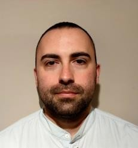

Elektrotechnische Schule „Nikola Tesla“ Banja Luka
Fachausbildung für Computer- Elektrotehniker (2003-2007)
Erfahrung
Produktion
(01.12.2022 – 01.12.2023) Porsche eBike Performance
(Ottobrunn,Deutschland)
-
Fertigung der Antriebseinheit – bestehend aus Motor und Elektronik -
sowie Tretlagergetriebe in fest definierten Produktionsschritten
-
Zusammenbau des Antriebssystems und Dürchführung der End-of-Line
Prüfung
Lieferfahrer
(01.10.2021 – 01.11.2022) Lieferando (München,Deutschland)
- Lieferung im Stadtzentrum
PC- Techniker
(01.09.2020-30.09.2021) GSD Remarketing GmbH & Co. KG (Sulzemoos,
Deutschland)
-
Software – Vorinstallation-Individuelle Vorinstallation mit
anschließender Distribution an die einzelnen Geräte, Durchführung von
Software Testroutinen für PCs und Notebooks
-
Treiber - und Programmspezifische Einbindungen in neue Images, Office
basierende Auswertung (Office 365)
-
Optimierung: Reparatur und Instandsetzung, Gehäuseausbesserungen,
Prüfung diverser IT Peripherie, Durchführung von Testroutinen,
Fehlerdiagnose / Fehler-Reporting und Fehlerbeseitigung defekter
Geräte, Austausch defekter Komponenten sowie Umrüstungen der
verschiedener Systeme
Elektrohelfer
(08.10.2018-31.07.2020) Elektro- und Gebäudetechnik Klopfleisch (Apolda,
Deutschland)
-
Installation, Montage von Elektroanlagen sowie jeglicher Art von
Bauleistungen
-
Hausgeräteservice – Lieferung, Reparatur und Aufstellung von
Hausgeräten (Waschmaschine, Trockner, Geschirrspülmaschine,
Elektroherd, Kühlschrank, usw.) aller Hersteller
-
Reparatur von Elektrowerkzeugen (Bohrmaschine, Akkuschrauber,
Kreissäge, …) und Elektromotoren
- Löten von Feindrähten, Kabeln und Litzen
Kaufmännischer Angestellter im Bereich Licht und Beleuchtung
(05.08.2016 – 30.06.2017) B.B. Link (Banja Luka, Bosnien und
Herzegowina)
- Kundenbetreuung und Beratung
- Verwaltung der gesamten Wertschöpfungs- und Lieferungskette
- Organisation der Arbeit
-
Versand von Waren zu anderen Zweigen innerhalb des Unternehmens,
Kontrolle von Waren
Mitarbeiter im Restaurant
(1.8.2014 – 1.2.2015) McDonalds (Jena, Deutschland)
-
Gästeservice an den unterschiedlichen Stationen und die
Produktzubereitung
- Arbeit an der Theke, beim Bestellprozess Kunden unterstützen
Elektroinstallationstechniker
(02.07.2012 – 24.08.2012) FIS Banjaluka
-
Elektroinstallation und Verkabelungen von Licht und Beleuchtung nach
Plänen
- Montage von elektronischen Baugruppen und Geräten
-
Verschiedene Tätigkeiten aller Arten, einschließlich der Verknüpfung von
Computern
-
Vorbereitung der internen Infrastruktur für die Warenpräsentation von
Computerkomponenten
Technischer Support
(01.02.2011 – 31.01.2012) Navigo software & communication (Banja Luka,
Bosnien und Herzegowina)
-
Im Bereich Firmenkundenbetreuung war ich für alle technischen Anfragen
unserer Geschäftskunden rund um unseren WLAN dienst zuständig
-
Arbeit am Feld, Einbau von drahtlosen Geräten und Routern-Einstellungen
-
Bezahlung von Rechnungen(Sendungsabwicklung) und Verkauf von
Computerkomponenten
Kaufmännischer Angestellter im Bereich Elektronik
(25.09.2008 – 31.01.2011) Fighter electronic d.o.o (Banja Luka, Bosnien
und Herzegowina)
- Verkauf von verschiedenen elektronischen Bauelementen
- Reparatur von Laptop-, PC- und Server-Komponenten
-
Nutzung von MS Word für die Erstellung von Briefen und Formularen und MS
Excel für die Auswertung der Monatsabschlüsse
- Löten von Platinen und Elektrischen Baugruppen
Fähigkeiten
- Führerschein (14 Jahre)
- EU Reisepass
- Deutschkenntnisse (B1 in Schrift und B2 in Wort)
- Englischkenntnisse (A2 in Schrift und Wort)
- ◗ Fortgeschrittene Computerkenntnisse